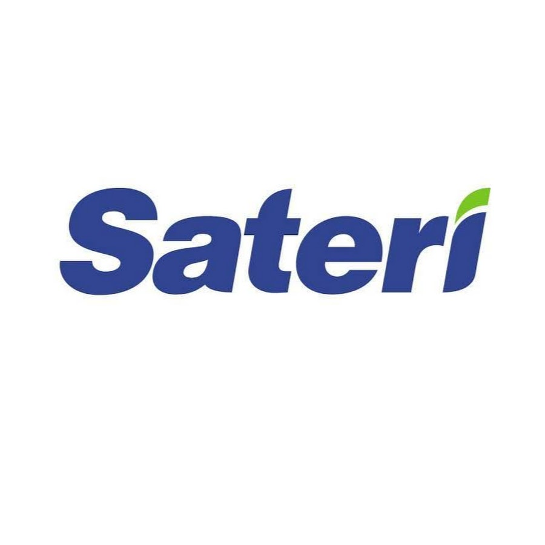

Pengenalan Sustainable Living
Seiring perkembangan zaman, kemajuan di berbagai lini industri dapat memenuhi kebutuhan manusia secara primer atau sekunder. Namun tak jarang perkembangan industri yang ada saat ini dapat menciptakan perilaku baru bagi pengonsumsinya. Akibatnya Industri semakin memikirkan produksi yang cepat dan murah agar bisa dicapai oleh semua orang dari berbagai kalangan, dampak dari produksi yang ditekankan oleh kebutuhan pasar industri mulai mengabaikan kesehatan alam dan pemberdayaan lingkungan sekitar, penggunaan yang berlebihan dapat memengaruhi kerusakan alam seperti menciptakan gas karbon dioksida yang tidak sehat buat manusia dan hewan dan timbulnya emisi gas rumah kaca. Ini dapat dibuktikan pada tahun 2011 di china dimana banyak brand-brand terkenal di dunia seperti nike dan adidas menggunakan bahan produksi yang mengandung bahan kimia berbahaya dan memberikan dampak buruk di sungai yangtze dan beberapa sungai lainnya yang juga ikut terdampak. Dari permasalahan tersebut, kita sebagai manusia penting untuk mulai menyadari bahwa kita harus merubah gaya hidup kita dengan menerapkan sustainable living.
Lalu apa itu sustainable? Sustainable adalah sebuah gerakan atau gaya hidup manusia yang mencegah dan memanimalisir kerusakan alam disekitarnya akibat perilaku dan tindakan manusia. Untuk mencapai tujuan gaya hidup sustainable living masyarakat harus mulai memperhatikan produk yang mereka gunakan, dan mengurangi pemakaian plastik yang berlebihan yang bisa berdampak terjadinya penumpukkan sampah. Menerapkan sustainable living di kehidupan kita sehari hari seperti mengurangi penggunaan plastik yang sekali pakai, memakan buah yang terjaga karbonnya dibandingkan dengan makanan yang cepat saji, serta mengurangi penggunaan listrik dan air yang berlebihan, dengan menyadari pola gaya hidup kita artinya kita sudah membantu dalam menjaga lingkungan hidup di sekitar kita dan membantu merubah ekosistem industri dalam pengolahan produknya yang lebih ramah lingkungan.
Menerapkan Sustainable Living Bersama RGE
Sebagai perusahaan yang berbasis manufaktur sumber daya alam Royal Golden Eagle (RGE) mulai menciptakan inovasi baru dari produksi yang akan mereka buat dan ingin membangun gaya hidup dan prinsip-prinsip yang selaras dengan sustainable living. Royal Golden Eagle atau disingkat dengan sebutan RGE adalah grup industri manufaktur yang berbasis sumber daya alam. Grup perusahaan ini sudah memiliki lebih dari 60.000 orang pekerja di industrinya dan saat ini grup RGE sudah mempunyai aset senilai $30 milliar.
Lini Industri RGE Yang Menerapkan Sustainable Living
RGE memiliki beberapa sub industri yang bergerak di berbagai lini pemanfaatan sumber daya alam yakni:
-
1. April & Asia symbol
adalah perusahaan yang berlokasi di kota pangkalan kerinci, provinsi riau. Industri ini bergerak dalam menciptakan produk kertas dan tissue dengan menggunakan bahan dasar utama pohon akasia dan eukaliptus. Jenis dari kedua pohon tersebut ditanam lewat pengelolaan hutan tanaman industri (HTI). Produk yang mereka hasilkan dikenal dengan nama PaperOne, dimana saat ini produk PaperOne adalah andalan produsen kertas terbaik asal indonesia yang membantu memenuhi kebutuhan pasar secara global. April berkomitmen bahwa mereka akan beroparasi dengan pengelolaan yang berkelanjutan pada sustainable forest dan melalui visi mereka APRIL2030 berkomitmen untuk dapat memberikan kontribusi positif terhadap iklim, dan masyarakat sampai 2030 nanti.
-
2. Asian Agri & Apical
adalah industri yang bergerak dibidang pemanfaatan minyak nabati dan kelapa sawit. Asian Agri sendiri sudah berdiri sejak tahun 1979 dimana industri ini sudah bergabung dengan program perusahaan inti rakyat yang berkaitan dengan transmigrasi. Operasi yang dilakukan oleh asian agri meliputi pembibitan, penanaman dan pengolahan tandan buah segar (TBS) untuk menghasilkan minyak sawit yang berkelanjutan di pabrik yang berteknologi tinggi dan ramah lingkungan.
-
3. Sateri
adalah bagian dari grup industri RGE yang bergerak dibidang pembuatan serat rayon untuk kebutuhan pembuatan pakaian, alat kebersihan, dan kain rumah. Produk yang dihasilkan sateri adalah EcoCosy, EcoCosy merupakan produk andalan yang pembuatannya terbuat dari serat kayu sellulosa yang dirawat di perkebunana secara lestari dan berkelanjutan. Pakaian dan alat rumah yang terbuat dari serat viscose dapat membuat penggunanya nyaman, terurai secara hayati dan lembut saat pemakaian kain yang terbuat dari serat kayu yang dihasilkan dari industri sateri. Industri ini adalah salah satu perusahaan yang merubah gaya bisnis pembuatan bahan kain dan pakaian yang terbuat dari bahan kimia berbahaya menjadi serat kayu viscose yang dikelola secara berkelanjutan.
Tiga industri diatas adalah salah satu industri yang dikelola dengan baik dan teroganisir secara berkelanjutan oleh RGE. Terdapat lini bisnis lainnya yang masih belum dibahas pada tulisan ini namun untuk sekarang tiga industri diatas adalah salah satu contoh dari industri yang mengedepankan sustainable living untuk menyelamatkan lingkungan sekitar dan mempunyai visi untuk merubah ecosystem dengan pembuatan bahan industri secara terawat dan berkelanjutan.
Langkah-langkah Penerapan Sustainable Living RGE
Dalam perjalanan bisnisnya RGE selalu membuat langkah-langkah besar untuk berkontribusi dan menciptakan gaya hidup yang berkelanjutan dengan mengedepankan nilai-nilai lingkungan dan bisnis yang mereka jalankan.
Berikut langkah-langkah yang diterapkan pada Royal Golden Eagle dalam mendukung gaya hidup sustainable living:
- 1.Sebagai industri yang memanfaatkan sumber daya alam, mereka melakukan berbagai kegiatan konservasi, restorasi dan pengelolaan sumber daya yang bernilai dengan menyelearaskan kegiatan produksi dan upaya pelestarian.
- 2.RGE selalu mengedepankan dan mendukung pembangunan berkelanjutan dan pengelolaan hutan yang bertanggung jawab dengan memperhatikan dan melakukan teknik pemanenan yang baik akan menghasilkan dampak yang rendah terhadap lingkungan di sekitarnya, dengan perlindungan hutan yang berkelanjutan menghasilkan konservasi tinggi atau disebut dengan High Conservation Value Forest (HCVF). Selain itu Peran perusahaan RGE juga membantu memberikan dukungan edukasi terhadap masyarakat sekitar dengan tujuan untuk menumbuhkan rasa kesadaran masyarakat akan pentingnya penerapan praktik-praktik berkelanjutan yang terbaik, sebagai contoh salah satu industri RGE yakni APRIL telah berhasil dan melakukan konservasi serta melindungi lebi dari 250 juta hektar High Conservation Value Forest di wilayah industri mereka.
- 3.RGE didalam perindustriannya yang memanfaatkan sumber daya alam berkelanjutan menggunakan teknologi dan peralatan yang lebih modern sehingga dapat menghasilkan kenyamanan bagi alam di sekitarnya dan terawat secara berkelanjutan. Dengan dibuktikannya dari sertifikasi yang mereka raih yakni IS0 9001, ISO 140001, OHSAS 18001, dan sertifikasi kehutanan PEFC FM/COC.
- 4.Dengan menerapkan penggunaan teknologi pengolahan air di industri dapat menggunakan kembali air yang digunakan sebelumnya, Sehingga dapat menghemat penggunaan air yang disebabkan oleh industri. Dengan metode seperti ini industri yang memakai air sebagai bahan industri produk mereka bisa meminimalkan kandungan limbahnya serta hasil dari pengolahannya dapat digunakan kembali sebagai energi dan di saat yang bersamaan juga mengurangi ketergantungan pemakaian bahan fosil. Langkah ini merupakan bagian yang penting dari industri yang ingin mengedepankan metode sustainable living.
-
5.Program yang mereka cetuskan
pada tahun 2014 yakni program desa bebas api, membantu mengurangi
pembakaran lahan perkebunan yang menghasilkan asap yang tidak sedap
untuk dihirup warga dan masyarakat di sekitar. Pada program yang
mereka ciptakan ini RGE membantu memberikan insentif dan memberdayakan
desa-desa yang bergabung dengan program desa bebas api untuk
mengadopsi kebijakan yang mereka buat. Dengan mengurangi resiko
kebakaran yang merugikan banyak pihak termasuk alam disekitar dan
industri akan menghasilkan udara yang segar dan kebersihan lingkungan.
Dukungan serta kerja sama yang erat dengan pemerintah dan masyarakat
mampu menanggulangi kebakaran yang terjadi akibat faktor-faktor yang
tidak terduga.
Beberapa hal penanggulangan atau penekanan kebakaran kelas internasional yang dilakukan RGE yakni:
1. Helikopter dengan tim pemadam kebakaran.
2. Bom air.
3. Truk pemadam kebakaran dan kapal airboat.
4. Tim reaksi cepat. - 6.Restorasi Sistem, RGE telah mengembangkan program kerja mereka untuk melakukan restorasi di beberapa lahan gambut yang rusak seluas 40.000 hektar di beberapa wilayah seperti semenanjung kampar, dan pulau padang, Riau. April sendiri selaku produsen kertas telah mengagas dan mensponsori program restorasi ekosistem (RER).
kesimpulan
RGE selaku industri selalu ingin berusaha untuk tetap membantu dan berkontribusi dalam menjaga lingkungan alam di sekitarnya, dengan penerapan langkah-langkah atau metode yang sesuai dengan prinsip sustainbale living seperti melakukan restorasi hutan dan melakukan perbaikan pada tanah-tanah yang rusak. RGE juga turut andil kepada masyarakat dengan memberikan intensif ke desa-desa yang bergabung pada program desa bebas api untuk mencapai tujuan bersama yakni menjaga lingkungan dan bebas api, serta pemberian edukasi kepada masyarakat sekitar betapa pentingnya perawatan hutan atau lahan yang bertujuan untuk menumbuhkan rasa kesadaran mereka terhadap lingkungan disekitarnya. RGE selalu mengedepankan pengolahan produk dari hasil industri mereka untuk tetap aman buat masyarakat dan lingkungan alam.